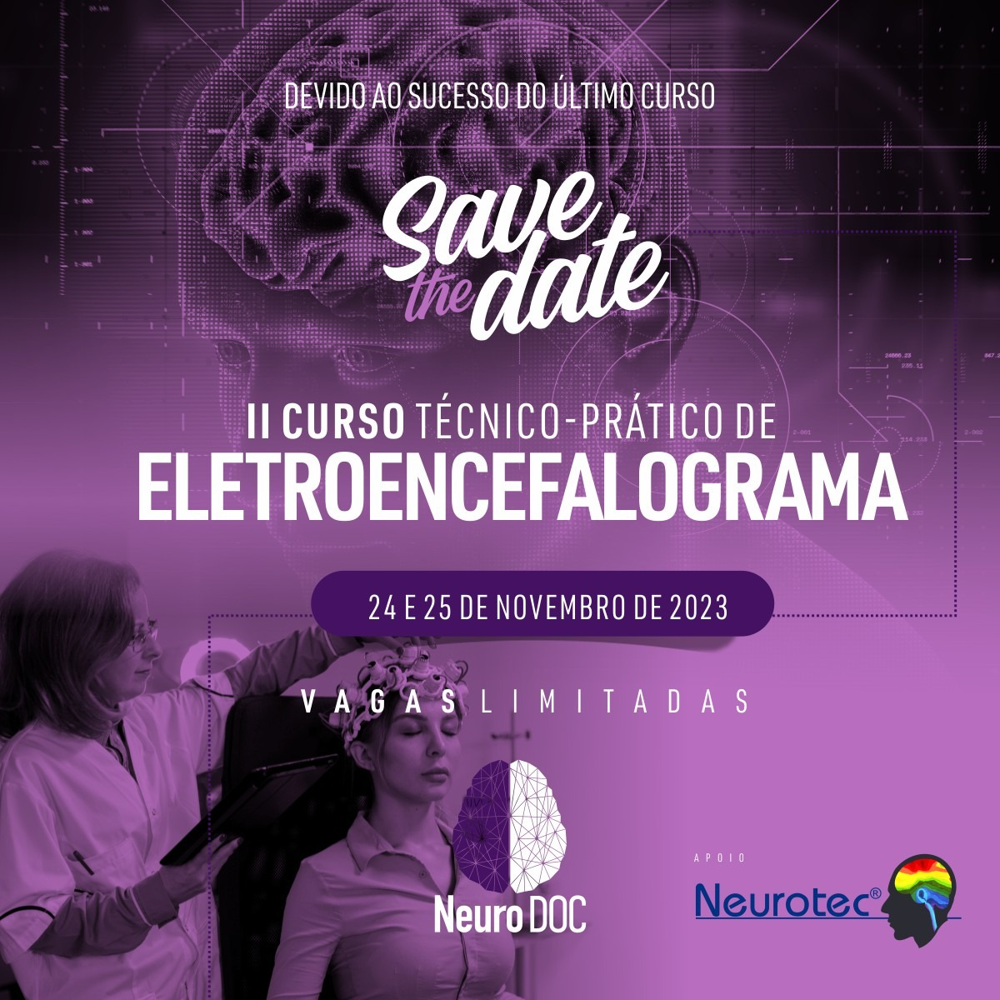

Informações Gerais
O II Curso Técnico-Prático de Eletroencefalograma é um evento exclusivo dedicado à atualização profissional em técnicas avançadas de EEG. Conheça os fundamentos práticos, procedimentos clínicos e as mais modernas tecnologias em neurofisiologia clínica.
🎯 Vagas
Fechadas
👥 Organizadores
Neuro DOC e NEUROTEC®